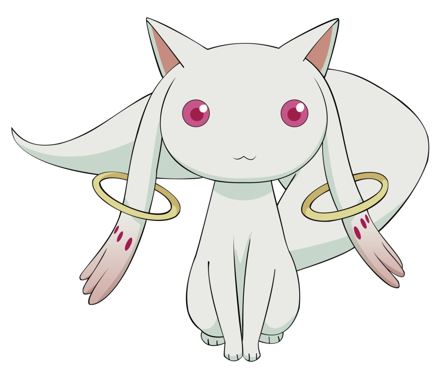

In the fictional city of Mitakihara, Japan, a middle school student named Madoka Kaname and her best friend, Sayaka Miki, encounter a small, cat-like creature named Kyubey. It offers a contract in which a girl may have any wish granted in exchange for obtaining magical powers and being tasked with fighting witches. Meanwhile, a transfer student and mysterious magical girl named Homura Akemi tries to stop Madoka from making the contract with Kyubey. Madoka and Sayaka then meet Mami Tomoe, an upperclassman at the same school who is also a magical girl. Noticing their indecisiveness on whether to become a magical girl, Mami offers to take Madoka and Sayaka along on her witch hunts so they may learn of the responsibilities of being a magical girl.
However, after witnessing Mami's death at the hands of a witch, Madoka realizes the life of a magical girl is filled with suffering and pain. This is further enforced by the appearance of Kyoko Sakura, a veteran magical girl whose wish unintentionally caused the death of her family. Madoka also discovers magical girls give up their souls to form Soul Gems, the source of their magic. When a Soul Gem becomes too tainted with despair, it turns into a grief seed which hatches into a witch. Sayaka decides to become a magical girl after learning that doing so would allow her to heal Kyosuke, a musician and friend of hers who she has a crush on. However, her friend Hitomi Shizuki confesses her love to him first, causing Sayaka to become disillusioned and fall into an inescapable despair that turns her into a witch. Kyubey reveals to Madoka that he is of an alien race that has been harvesting the emotions of magical girls for centuries to use as energy to counteract the spread of entropy, and thus stave off the heat death of the universe. Madoka also learns that Homura is a magical girl from a different timeline who has repeated the same month countless times to try to save Madoka from a grisly fate.
Madoka and Kyoko attempt to reverse Sayaka's transformation, but the plan fails and Kyoko is forced to sacrifice herself to allow Madoka to escape, leaving Homura as the only remaining magical girl. Following this, an extremely powerful witch known as Walpurgisnacht approaches the city. Homura attempts to stop it but is defeated. She begins to lose hope and is on the verge of becoming a witch when Madoka arrives. With the past month's events in mind, Madoka decides to become a magical girl, despite Homura's efforts to stop her. She makes a wish to stop the creation of all witches in the past, present, and future. The paradoxical nature of her wish causes her to transcend into a psychopomp form, called the "Law of Cycles" which is a new rule of the universe where magical girls are purified and disappear into a higher plane instead of becoming witches. A new reality is formed in which Homura is the only one who remembers Madoka. Homura vows to continue fighting in honor of Madoka and the world she cherished.